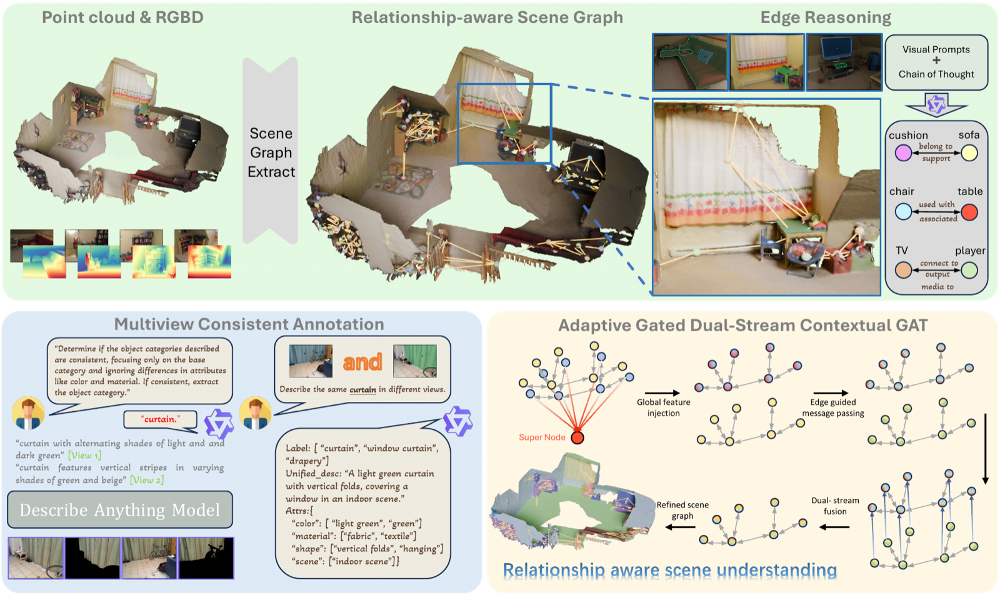

Open-vocabulary 3D scene understanding aims to segment 3D scenes beyond predefined categories by transferring semantic knowledge from vision-language models. Existing methods have advanced this task by lifting language-aligned 2D features into 3D, yet they often rely on context-independent semantic representations, leaving object relationships underexplored for contextual refinement. We propose RelGraphOV, a relationship-aware framework that uses 3D scene graphs to enhance open-vocabulary 3D understanding. Our method constructs relational scene graphs from multi-view observations by leveraging vision-language reasoning to infer object relationships and prune geometrically implausible connections, without manual relationship annotations. To aggregate relational context while avoiding feature interference, we introduce an Adaptive Gated Dual-Stream Contextual GAT that separates dense geometric features and semantic CLIP embeddings, performs edge-guided message passing, and adaptively fuses complementary semantics. A hierarchical contrastive objective further promotes instance-level consistency and category-level discrimination. Experiments on ScanNet, ScanNet200, ScanNet++, and Replica demonstrate strong performance and generalization ability.
Keywords: 3D Semantic Segmentation · Scene Graph · Open-Vocabulary

Given posed RGB-D observations, RelGraphOV refines open-vocabulary 3D semantics in four stages:
@inproceedings{chen2026relgraphov,
title = {Beyond Isolated Objects: Relationship-aware Open-Vocabulary
3D Scene Understanding via 3D Scene Graph Analysis},
author = {Chen, Xianhao and Hu, Jiarui and Yang, Yuanbo and Zhang, Xiyu and
Wang, Tengyue and Bao, Hujun and Zhang, Guofeng and Cui, Zhaopeng},
booktitle = {Proceedings of the European Conference on Computer Vision (ECCV)},
year = {2026}
}